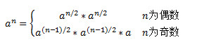

日志
题目：实现函数double Power(double base, int exponent)，求base的exponent次方。不需要考虑溢出。
分析：这是一道看起来很简单的问题。可能有不少的人在看到题目后30秒写出如下的代码：
double Power(double base, int exponent)
{
double result = 1.0;
for(int i = 1; i <= exponent; ++i)
result *= base;
return result;
}
上述代码至少有一个问题：由于输入的exponent是个int型的数值，因此可能为正数，也可能是负数。上述代码只考虑了exponent为正数的情况。
接下来，我们把代码改成：
bool g_InvalidInput = false;
double Power(double base, int exponent)
{
g_InvalidInput = false;
if(IsZero(base) && exponent < 0)
{
g_InvalidInput = true;
return 0.0;
}
unsigned int unsignedExponent = static_cast<unsigned int>(exponent);
if(exponent < 0)
unsignedExponent = static_cast<unsigned int>(-exponent);
double result = PowerWithUnsignedExponent(base, unsignedExponent);
if(exponent < 0)
result = 1.0 / result;
return result;
}
double PowerWithUnsignedExponent(double base, unsigned int exponent)
{
double result = 1.0;
for(int i = 1; i <= exponent; ++i)
result *= base;
return result;
}
上述代码较之前的代码有了明显的改进，主要体现在：首先它考虑了exponent为负数的情况。其次它还特殊处理了当底数base为0而指数exponent为负数的情况。如果没有特殊处理，就有可能出现除数为0的情况。这里是用一个全局变量来表示无效输入。关于不同方法来表示输入无效的讨论，详见本系列第17题。
最后需要指出的是：由于0^0次方在数学上是没有意义的，因此无论是输入0还是1都是可以接受的，但需要在文档中说明清楚。
这次的代码在逻辑上看起来已经是很严密了，那是不是意味了就没有进一步改进的空间了呢？接下来我们来讨论一下它的性能：
如果我们输入的指数exponent为32，按照前面的算法，我们在函数PowerWithUnsignedExponent中的循环中至少需要做乘法31次。但我们可以换一种思路考虑：我们要求出一个数字的32次方，如果我们已经知道了它的16次方，那么只要在16次方的基础上再平方一次就可以了。而16次方是8次方的平方。这样以此类推，我们求32次方只需要做5次乘法：求平方，在平方的基础上求4次方，在4次方的基础上平方求8次方，在8次方的基础上求16次方，最后在16次方的基础上求32次方。
32刚好是2的整数次方。如果不巧输入的指数exponent不是2的整数次方，我们又该怎么办呢？我们换个数字6来分析，6就不是2的整数次方。但我们注意到6是等于2+4，因此我们可以把一个数的6次方表示为该数的平方乘以它的4次方。于是，求一个数的6次方需要3次乘法：第一次求平方，第二次在平方的基础上求4次方，最后一次把平方的结果和4次方的结果相乘。
现在把上面的思路总结一下：把指数分解了一个或若干个2的整数次方。我们可以用连续平方的方法得到以2的整数次方为指数的值，接下来再把每个前面得到的值相乘就得到了最后的结果。
到目前为止，我们还剩下一个问题：如何将指数分解为一个或若干个2的整数次方。我们把指数表示为二进制数再来分析。比如6的二进制表示为110，在它的第2位和第3位为1，因此6=2^(2-1)+2^(3-1) 。也就是说只要它的第n位为1，我们就加上2的n-1次方。
最后，我们根据上面的思路，重写函数PowerWithUnsignedExponent：
double PowerWithUnsignedExponent(double base, unsigned int exponent)
{
std::bitset<32> bits(exponent);
if(bits.none())
return 1.0;
int numberOf1 = bits.count();
double multiplication[32];
for(int i = 0; i < 32; ++i)
{
multiplication[i] = 1.0;
}
// if the i-th bit in exponent is 1,
// the i-th number in array multiplication is base ^ (2 ^ n)
int count = 0;
double power = 1.0;
for(int i = 0; i < 32 && count < numberOf1; ++i)
{
if(i == 0)
power = base;
else
power = power * power;
if(bits.at(i))
{
multiplication[i] = power;
++count;
}
}
power = 1.0;
for(int i = 0; i < 32; ++i)
{
if(bits.at(i))
power *= multiplication[i];
}
return power;
}
在上述代码中，我们用C++的标准函数库中bitset把整数表示为它的二进制，增大代码的可读性。如果exponent的第i位为1，那么在数组multiplication的第i个数字中保存以base为底数，以2的i次方为指数的值。最后，我们再把所以位为1在数组中的对应的值相乘得到最后的结果。
上面的代码需要我们根据base的二进制表达的每一位来确定是不是需要做乘法。对二进制的操作很多人都不是很熟悉，因此编码可能觉得有些难度。我们可以换一种思路考虑：我们要求出一个数字的32次方，如果我们已经知道了它的16次方，那么只要在16次方的基础上再平方一次就可以了。而16次方是8次方的平方。这样以此类推，我们求32次方只需要做5次乘法：先求平方，在平方的基础上求4次方，在4次方的基础上平方求8次方，在8次方的基础上求16次方，最后在16次方的基础上求32次方。
也就是说，我们可以用如下公式求a的n次方：

这个公式很容易就能用递归来实现。新的PowerWithUnsignedExponent代码如下：
double PowerWithUnsignedExponent(double base, unsigned int exponent)
{
if(exponent == 0)
return 1;
if(exponent == 1)
return base;
double result = PowerWithUnsignedExponent(base, exponent >> 1);
result *= result;
if(exponent & 0x1 == 1)
result *= base;
return result;
}
本文已经收录到《剑指Offer——名企面试官精讲典型编程题》一书中，有改动，书中的分析讲解更加详细。欢迎关注。
博主何海涛对本博客文章享有版权。网络转载请注明出处http://zhedahht.blog.163.com/。整理出版物请和作者联系。
 转发至微博
转发至微博
转发至微博
转发至微博
 0人 |
分享到：
0人 |
分享到：

评论
if(exponent == 1)
return base;
将整数分解成若干个2的幂的方法其实与如下方法原理上是一样的：
若整数是奇数，减1；
若是偶数，除以2；
很多人的回帖就是该方法。
但我举个例子，该方法好像不是最优的，例子如下：
15这个数，二进制为1111，需要6次乘法运算，
若假定乘法与除法运算量相当（实际不是），可以用4次乘法＋1次除法来实现，先加1变为16，二进制为10000，需要4次乘法，再一次除法，某种程度上比lz的更优
#include <iostream>
#include <stdio.h>
#include <bitset>
using namespace std;
int unsigned_power(int a, int m)
{
int d = 1;
bitset<32> bitvec(m);
int bit_count = bitvec.size();
for (int i = bit_count-1; i >= 0 ; i--)
{
d = d * d;
if (bitvec[i])
{
d = d * a;
}
}
return d;
}
int main(int argc, char *argv[])
{
cout << unsigned_power(3, 4);
cout << endl;
return 0;
}
快速幂方法，算法导论有介绍
public double squreMultiply(int num, int exponent){
double result = 1;
int p = Math.abs(exponent);
while(p>0){
if(p%2==1){
result = result*num;
p=p-1;
}else{
num = num*num;
p=p/2;
}
}
if(num<0){
if(exponent%2==1){
result=0-result;
}
}
if(exponent<0){
result=1/result;
}
return result;
}
貌似这个是个密码学的问题
一直在看博主的题,受益颇多,谢谢
public double squreMultiply(int num, int exponent){
double result = 1;
int tempNum = Math.abs(num);
int p = Math.abs(exponent);
while(p>0){
if(p%2==1){
result = result*tempNum;
p=p-1;
}else{
tempNum = tempNum*tempNum;
p=p/2;
}
}
if(num<0){
if(exponent%2==1){
result=0-result;
}
}
if(exponent<0){
result=1/result;
}
return result;
}
之前的貌似有点小问题...这个应该没问题了吧...用JAVA写的
...最后判断exponent那里,需要把exponent用绝对值代替
这个观点好像正确，我的算法：
double powerRecursive(double x, int m)
{
if(m==0)
return 1;
if(m==1)
return x;
double dR = x;
int k = 2;
int d = m - k;
int lastd = d;
{
dR = dR*dR;
k = k*k;
lastd = d;
d = m-k;
}
if(lastd==0)
return dR;
else if(lastd==1)
return dR = dR*x;
else if(lastd>1)
return dR*powerRecursive(x, lastd);
}
template <class T> T mypow(T x, int n)
{
T pow = (T)1;
for(int i = abs(n); i > 0; i >>= 1)
{
if(i & 1)
{
pow = pow * x;
}
x = x * x; //多计算最后一次
}
return (n < 0)? (T)1 / pow : pow;
}
inline double powi(double base, int times)
{
double tmp = base, ret = 1.0;
for(int t=times; t>0; t/=2)
{
if(t%2==1) ret*=tmp;
tmp = tmp * tmp;
}
return ret;
}
额，这个考虑负数的情况很赞！我的版本：
const double EPS = 1e-8;
double IsZero(double value)
{
return value > -EPS && value < EPS;
}
double Power(double base, int exponent)
{
if(exponent < 0 && IsZero(base))
{
throw std::runtime_error("指数为负的情况下，底数不能为零！");
}
int newExponent = abs(exponent);
double ret = 1.0;
while(newExponent > 0)
{
if(newExponent & 1)
{
ret *= base;
}
base *= base;
newExponent >>= 1;
}
if(exponent < 0)
{
ret = 1.0 / ret;
}
return ret;
}